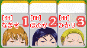

3.手の作り方
・刻子（コーツ）
同じ牌を３枚集めると刻子になります。

▲刻子の例
・順子（シュンツ）
牌に描かれた番号が連続している３枚の牌（１-２-３とか４-５-６とか）で、３枚とも同じ作品のキャラクターの場合、順子になります。
▲順子の例
※ 無印とMHは同じ作品として扱う
※ Yes!プリキュア５と５GoGo!は同じ作品として扱う
・面子（メンツ）
順子または刻子のことを面子と呼びます。

・上がり形
面子(牌３枚で構成される)が４組と同一牌２個(※)の合計14枚を揃えると上がり形となります。上がるためには、この上がり形を作る必要があります。
※･･･この同一牌２個の事を雀頭と呼びます。

▲アガリ形の例

面子を４つと、同一の牌を2個、揃えたら上がれるんだね！

まって、みらい。上がるためにはもう一つ条件があるの、それが「1つ以上の役が成立していないと上がることができない」というキュアジャンの重要ルールなのよ。
役？？役ってなあに？
それは次の解説ページで教えるわ！さあ、「4.役について」にレッツGO!
[3/9]